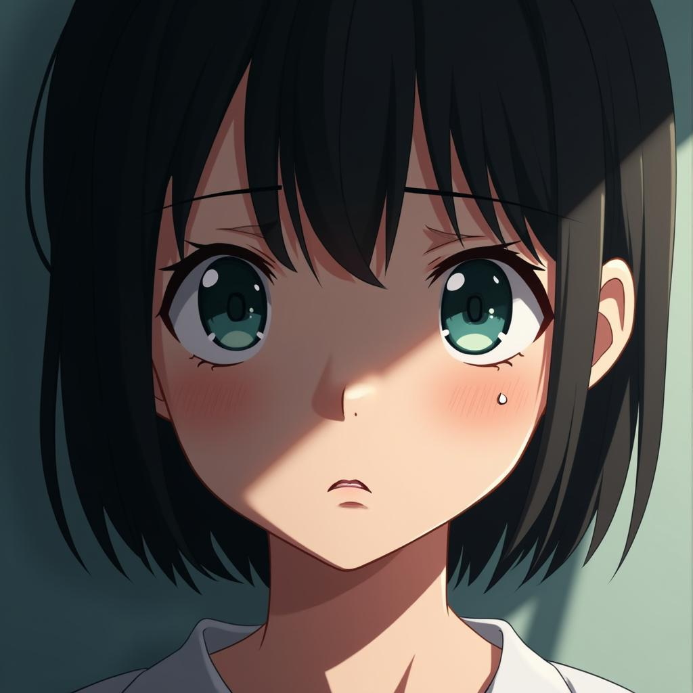

salidas reales del modelo — estilo entrenado con LoRA
Pipeline de entrenamiento de modelos generativos
trabajo de fin de grado
Un flujo de trabajo completo para entrenar modelos de generación de imagen bajo estilos artísticos predeterminados: del dataset crudo al modelo afinado. Preparación y etiquetado de datos, fine-tuning con LoRA y Dreambooth sobre modelos de difusión, y evaluación de coherencia estilística en cada iteración.
El objetivo: que un estilo concreto sea reproducible y controlable, en lugar de depender del azar del prompt.